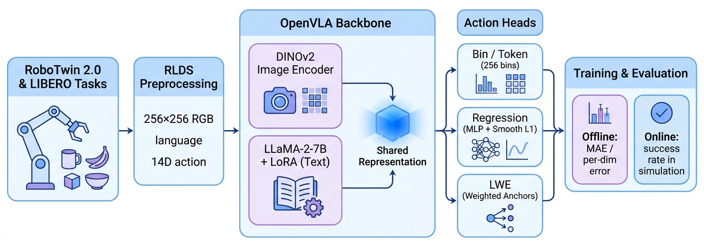
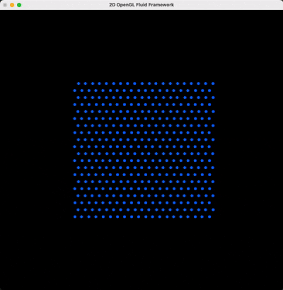
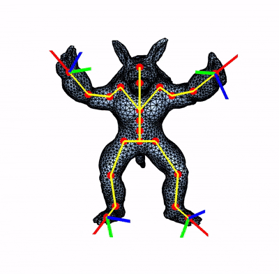
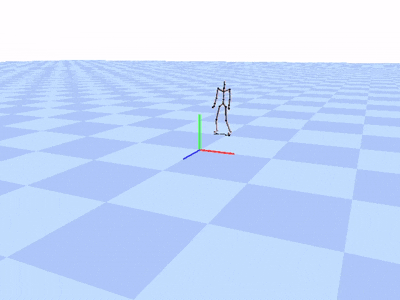
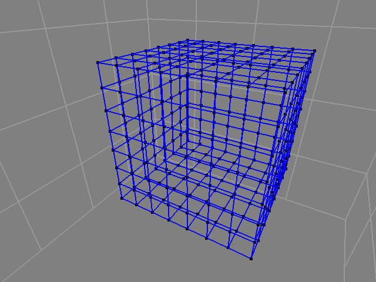
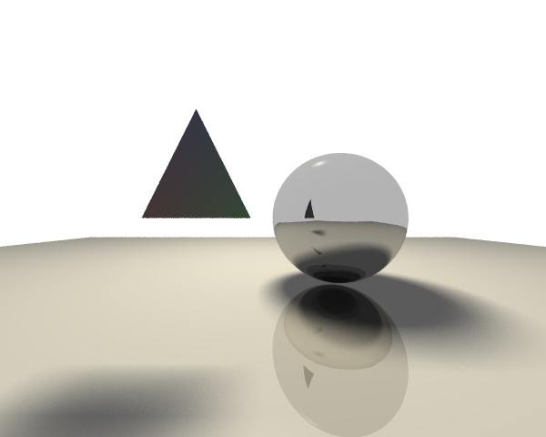
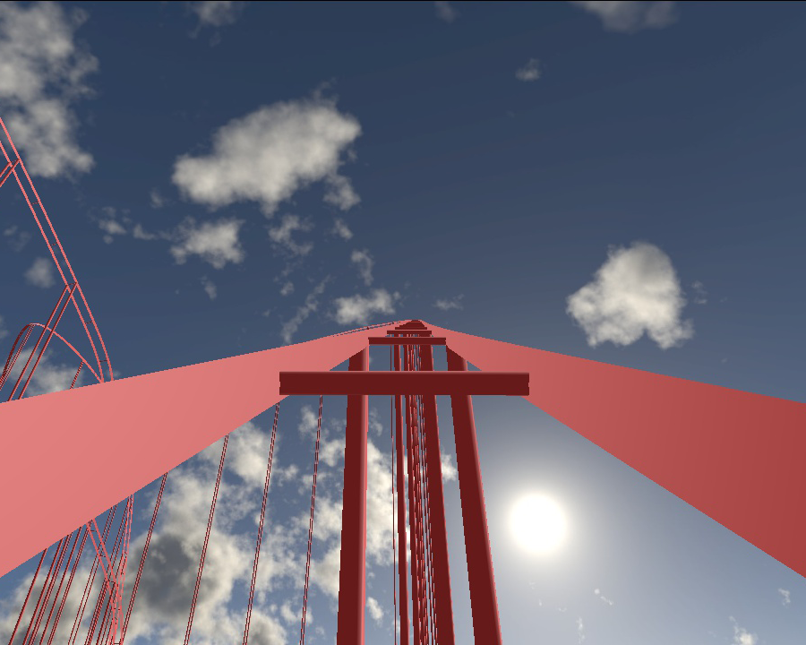
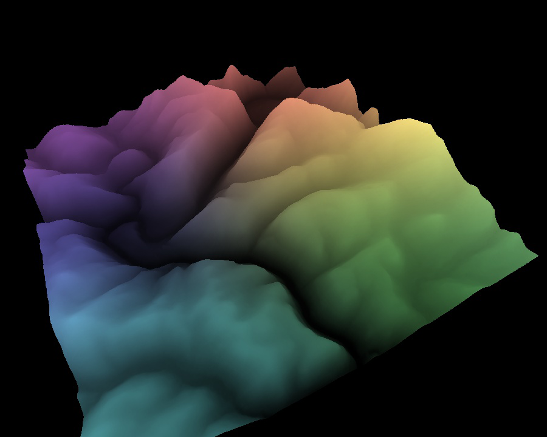
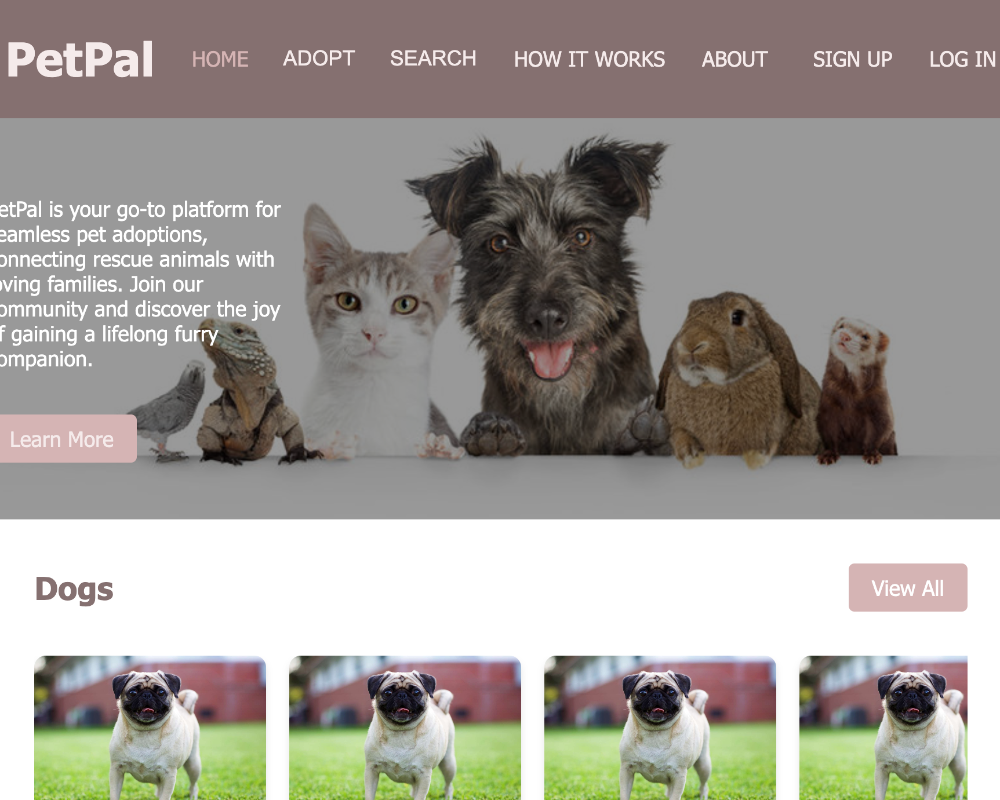

Projects
Here is a collection of my course projects and personal projects in computer graphics, simulation, and other areas.

VLA with better number representation | Python
Fall 2025
We study lightweight continuous alternatives on top of OpenVLA-OFT by replacing the 256-bin action tokenizer with two non-autoregressive heads.
[Project Proposal] [Mid Report] [Final Report]

Incompressible Fluid Simulation: A Comparison | C++, OpenGL
Spring 2025
A 2D incompressible fluid simulation implemented in C++ with visualization using OpenGL and GLUT. The main objective is to compare different fluid simulation methods, including: Grid-based (Stable Fluids), Particle-based (SPH), Particle-In-Cell (PIC), hybrid PIC/FLIP method(PIC/FLIP), Affine Particle-In-Cell (APIC).
[Code] [Report] [Presentation Slides]

Inverse Kinematics with Skinning | C++
Spring 2025
Implemented skinning, forward kinematics (FK) and inverse kinematics (IK) to deform a character. The character is represented as an obj mesh.
[Code] [Demo Video]

Motion Capture Interpolation | C++
Spring 2025
This project implements motion capture interpolation techniques for an ASF/AMC mocap system. It also includes a motion comparison plotter tool that graphs selected joint angles over a specified frame range.
[Code]

Simulating a Jello Cube | C++
Spring 2025
A 3D mass-spring simulation of a jello cube, featuring structural, shear, and bend springs, collision detection, external forces, and multiple integrators (Euler, RK4, implicit).
[Code] [Project Page] [Demo Video]

Ray Tracing | C++
Fall 2024
In this assignment, we built a ray tracer. The ray tracer is be able to handle opaque surfaces with lighting and shadows.
[Code] [Project Page]

Simulating a Roller Coaster | C++, OpenGL
Fall 2024
This assignment utilizes Catmull-Rom splines together with OpenGL's core profile shader-based lighting and texture mapping to simulate a roller coaster.
[Code] [Project Page] [Demo Video]

Height Fields Using Shaders | C++, OpenGL
Fall 2024
This program renders a height field using OpenGL shaders, allowing interactive visualization and manipulation of terrain data derived from heightmap images. It supports various rendering modes, smooth shading, and user controls for transformation and camera adjustments.
[Code] [Project Page] [Demo Video]
Other Interesting Projects
PL-23 | Game development, Python
June 2025 - Ongoing
PL-23 is an LLM Agent-driven narrative puzzle game. We experimented with 10 different LLM Agent frameworks and prompts to develop our best-practice setup for dynamic dialogue and clue reasoning.
Experiement 3D Gaussian Splatting in Unreal Engine with different plugins| Unreal Engine
June 2025 - Ongoing
Experimented with 3D Gaussian Splatting in Unreal Engine with different plugins in Windows. The main objective is to compare different 3DGS plugins, including: XVERSE 3DGS, Luma AI, Akiya 3D Gaussians, Volinga UE, PFN 3DGS, and more.

Petpal | Full-Stack, Python
Fall 2023
Led a four-person team to develop a Python-based adoption platform with Django REST Framework and MySQL—implementing advanced search filters, real-time data handling, a responsive front end (HTML/CSS/JS), and secure authentication to streamline the pet adoption process.
[Code]